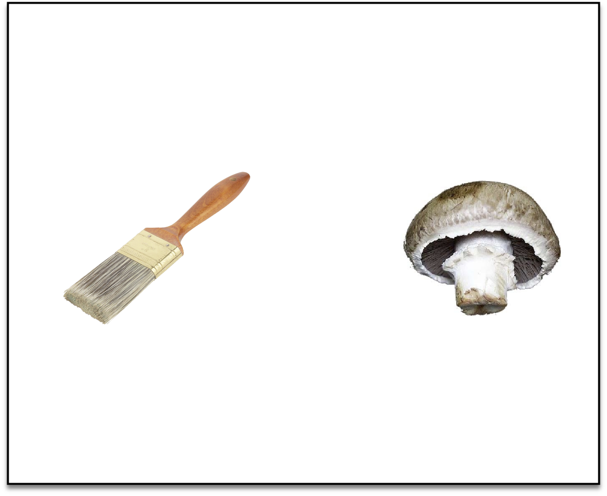
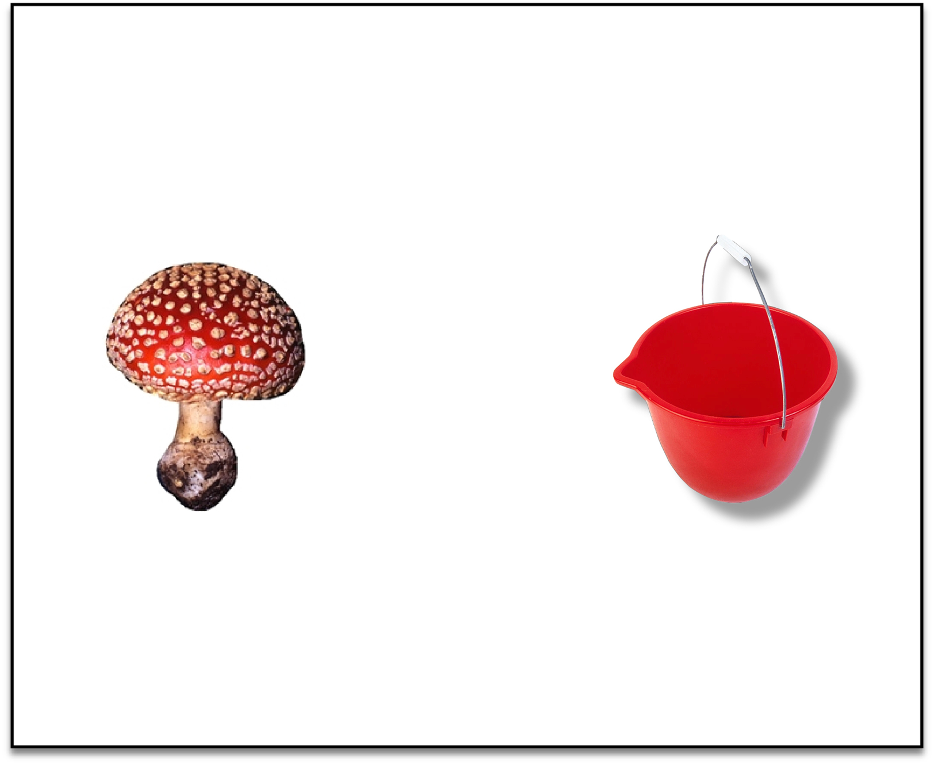
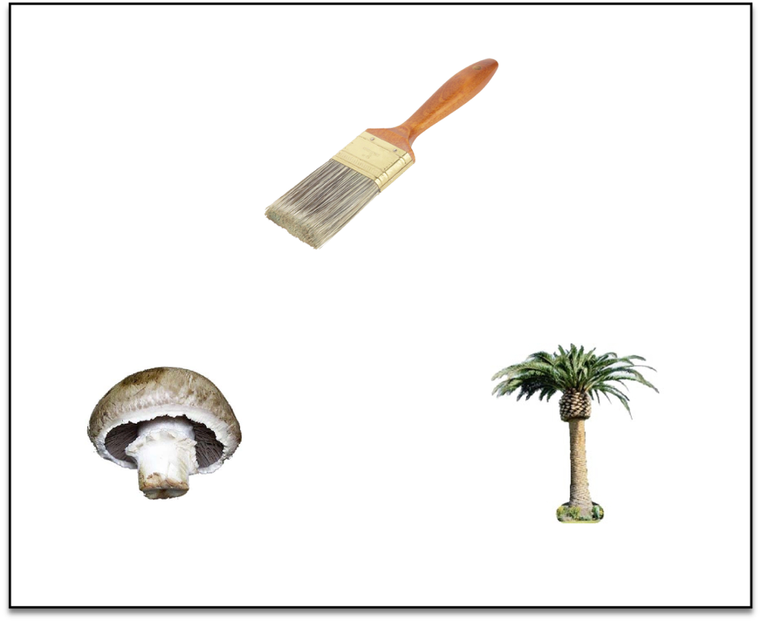
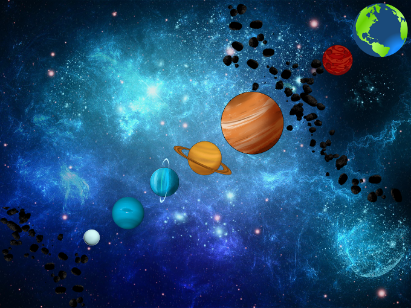
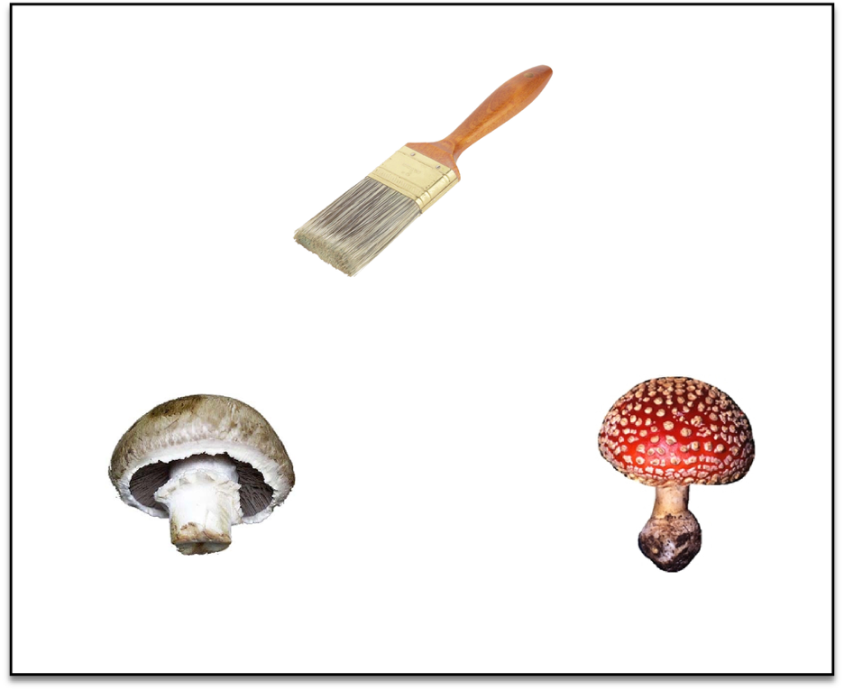
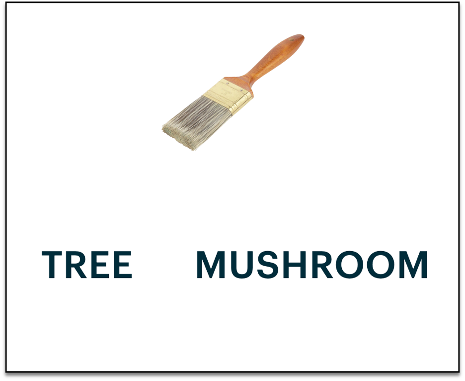
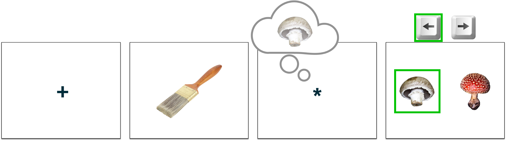
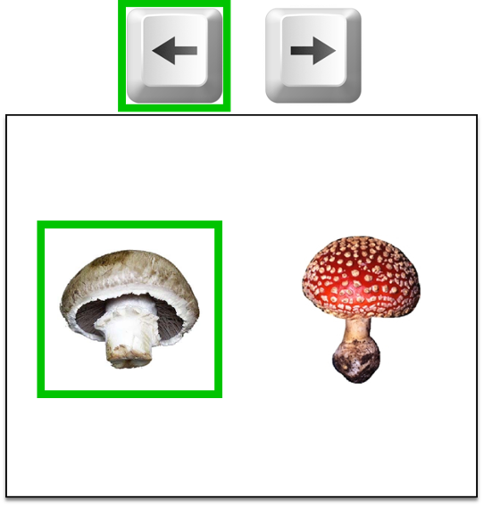
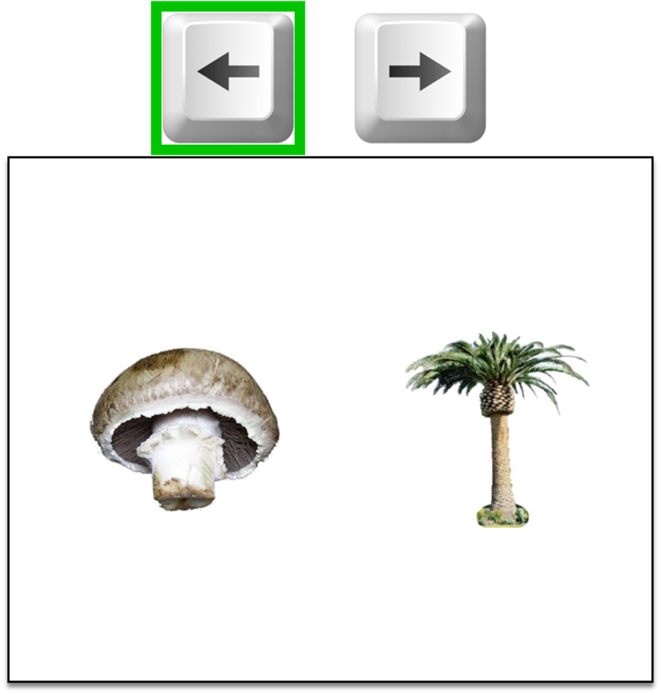
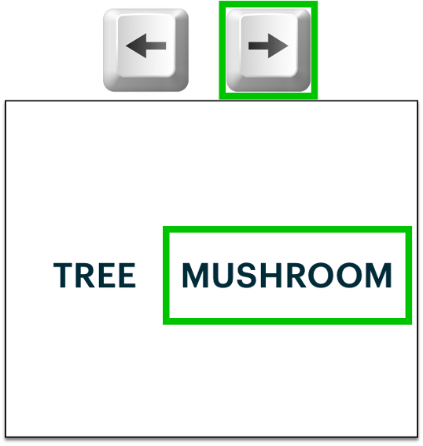

<!DOCTYPE html>
<html>
    <head>
        <title>Retrieve pilot experiment</title>
        <script src="jspsych-6.3.1/jspsych.js"></script>
        <link href="jspsych-6.3.1/css/jspsych.css" rel="stylesheet" type="text/css">
        <link rel="stylesheet" href="https://maxcdn.bootstrapcdn.com/bootstrap/4.0.0/css/bootstrap.min.css" integrity="sha384-Gn5384xqQ1aoWXA+058RXPxPg6fy4IWvTNh0E263XmFcJlSAwiGgFAW/dAiS6JXm" crossorigin="anonymous">        <script src="jspsych-6.3.1/plugins/jspsych-html-button-response.js"></script>
        <script src="jspsych-6.3.1/plugins/jspsych-html-keyboard-response.js"></script>
        <script src="jspsych-6.3.1/plugins/jspsych-instructions.js"></script>
        <script src="jspsych-6.3.1/plugins/jspsych-external-html.js"></script>
        <script src="jspsych-6.3.1/plugins/jspsych-preload.js"></script>
        <script src="jspsych-6.3.1/plugins/jspsych-fullscreen.js"></script>
        <script src="jspsych-6.3.1/plugins/jspsych-survey-text.js"></script>
        <script src="jspsych-6.3.1/plugins/jspsych-survey-multi-choice.js"></script>
        <script src="resources/materials/sequences.js"></script>
        <script src="resources/materials/r2_sequences.js"></script>
        <script src="resources/img/pair_lures.js"></script>
        <script src="resources/materials/counterbalancing_groups.js"></script>
        <script src="resources/materials/helpers.js"></script>
    </head>
    <body></body>
    <script>

        var start_time = new Date();

        var exp_type = jsPsych.data.urlVariables().exp;

        var timeline = [];

        /********************** Instructions **********************/
        var start_ins = 'Welcome!<br><br>There will be <b>three</b> games to play in this experiment.<br><br>\
                                        The first will take 20 minutes, the second will take 15 minutes, and the last will take 11 minutes.<br><br>\
                                        It is important that you pay attention and try your best through each game!<br>\
                                        If you do well, you will be able to earn up to $[] in bonus pay beyond the usual rate.<br><br>';

        var practice_ins = '<br>You will first have the chance to practice this game to make sure you understand.<br><br>\
                            Once you have finished reading the instructions, please press <i>Next</i> to begin the practice.<br>\
                            After you have successfully completed the practice, you may begin the game.<br><br>';
        
        var training_ins = ['<br>Your first task is to <b>LEARN</b> and <b>REMEMBER</b> pairs of pictures!<br><br>\
	                        During the <b>LEARNING</b> part, you will see pairs of pictures presented on the screen. The pairs are made up of objects<br> paired with either an apple, shell, leaf, or rock. You should try your hardest to remember that the pictures go together.<br><br>\
                            You do not need to press any buttons while you are learning, just try to remember the pairs presented to you on the computer screen.<br> You will be pressing keys later, during the <b>REMEMBERING</b> part.<br><br>\
                            You might see multiple different objects paired with items of the same kind.<br> For example, you might see a paintbrush paired with a mushroom (left) and bucket paired with a different kind of mushroom (right).<br><br>\
                            <div class="row">\
                                <div class="col">\
                                    \
                                </div>\
                                <div class="col">\
                                    \
                                </div>\
                            </div><br><br>\
                            The best way that we’ve found for people to remember these pairs are to <b>create a story or phrase</b> relating the two objects.<br> It may help you to imagine the two items interacting. For example, you might imagine someone placing the red mushroom in the bucket.<br> Or, you might like to use words to help you remember the pair.<br> We will not ask you to tell us your story, so it can be as silly as you like! Just try to come up with something that helps you remember.<br><br>\
                            Each pair will be on the screen for <b>three and a half seconds</b>. A plus sign will appear for a short time, followed by another pair.<br> You do not need to do anything when the plus sign is on the screen; just wait for the next pair to appear.<br><br>',
                            
                            '<br>In the <b>REMEMBERING</b> part, your job is to show us how well you remember the pairs!<br><br> You will see one object on the top of the screen. You should pick which object on the bottom of the screen goes with the one on top.<br> Here is an example:<br><br>\
                            <br><br>\
                            To pick the picture on the left, press the left arrow key  and to pick the picture on the right, press the right arrow key .<br>\
                            In this example, we would press the <b>left arrow key</b> since we just learned that the paintbrush was paired with the brown mushroom.<br><br>\
                            Sometimes you will have to choose between objects of <b>different kinds</b>, like the mushroom and tree,<br> and sometimes you will choose between objects of the <b>same kind</b>, like two different mushrooms.<br><br>\
                            You will have only <b>one and a half seconds</b> to make your choice. Try to respond as fast as you can.<br> If you are unsure of the correct answer, that’s OK – just make your best guess.<br> After you make your response, we will show you which item was the correct choice.<br><br>\
                            You will see each pair once in a round of learning. After each <b>LEARNING</b> part, you will do a <b>REMEMBERING</b> part.<br> There will be 8 repetitions of learning and then remembering. Afterwards, there will be a final <b>REMEMBERING</b> game.<br><br>',
                            
                            '<br>After each <b>REMEMBERING</b> part, you will see a score screen with your game piece (rocket) at the bottom left.<br> Based on your progress through the games, your game piece will move closer toward Earth.<br><br>\
                            Your goal is to get to Earth before the games are over!<br>You will earn bonus money when you get to halfway ($[]) and when you reach Earth (a total of $[]).<br><br>\
                            <div style="position: relative; top: 0; left: 0;">\
                                \
                                \
                            </div></div><br><br>',
                            practice_ins
                            ];

        var train_test_ins = ['Great job!<br><br> You will now move on to the final <b>REMEMBERING</b> part of this game before continuing with the experiment.<br><br>\
                                For this <b>REMEMBERING</b> part, you will see different types of questions mixed together.<br>\
                                    You will either choose which of two pictures or which of two words go with the object on top.<br><br>\
                                For example, here are the different questions you would see for the paintbrush-mushroom pair:<br><br>\
                                <div class="row">\
                                    <div class="col">\
                                        \
                                    </div>\
                                    <div class="col">\
                                        \
                                    </div>\
                                    <div class="col">\
                                        \
                                    </div>\
                                </div><br><br>\
                                For the <b>left</b> and <b>middle</b> questions, you should pick the brown mushroom (left), since that was the mushroom paired with the paintbrush during learning.<br>\
                                 For the question on the <b>right</b>, you should pick “MUSHROOM” (right), since a mushroom was paired with the paintbrush during learning.<br><br>\
                                 For the question on the right, the words you will see in the actual game will be: <b>LEAF, APPLE, ROCK, </b>and <b>SHELL</b>.<br><br>\
                                There will be breaks in the game to show your score. Remember, your goal is to get to Earth before the games are over!<br><br>',

                                practice_ins
                            ];

        var retrieve1_ins = ['Good job on the <b>LEARNING & REMEMBERING</b> game!<br><br>\
                            Your next task will be to remember the pairs you just learned in another way.<br><br>\
                                For this <b>MEMORY</b> game, a cross will first appear on the screen.<br>\
                                 Then, you will be shown an object followed by a long delay with a star in the middle of the screen.<br>\
                                During this delay, try to remember the item that was paired with the object. <u>Try to think about the paired item and hold it in your mind</u>.<br><br>\
                            Then two item pictures or words will show up on the screen. Your job is to tell us which item was paired with the object.<br>Which item matches the one you were thinking about?<br><br>\
                            Here is an example of the screens you would see, one by one (left to right):<br><br>\
                            <br><br>\
                            For the last screen, if the item on the LEFT was paired with the object, press the left arrow key .<br>\
                             If the item on the RIGHT was paired with the object, press the right arrow key .<br>\
                                For this example, you should choose the left picture since the paintbrush was paired with the brown mushroom in the <b>LEARNING & REMEMBERING</b> game.<br><br>\
                                Try to respond as fast as you can. You only have <b>1 second</b> to respond once the items or words are shown.<br><br>',
                            
                            'There are <b>three possible questions</b> that may show up after the delay:<br><br>\
                             (1) You must choose which of two items of the <b>same kind</b> was paired with the object, for example two mushrooms,<br>\
                              (2) You must choose which of two pictures of <b>different kinds</b> was paired with the object, for example a mushroom and a tree; or <br>\
                               (3) You must choose which of two <b>words</b> describes the item paired with the object, for example “MUSHROOM” or “TREE”.<br><br>\
                               Here is an example of the three possible questions and correct responses for the paintbrush-mushroom pair:<br><br>\
                               <div class="row" style="display: flex; align-items:center;">\
                                    <div class="col">\
                                        \
                                    </div>\
                                    <span style="">OR</span>\
                                    <div class="col">\
                                        \
                                    </div>\
                                    <span>OR</span>\
                                    <div class="col">\
                                        \
                                    </div>\
                                </div><br><br>\
                            The green highlights the correct response in this example. In the actual game there will be no signal for which choice was correct.<br><br>\
                            There will be breaks in this game to show your score.<br><br>',

                            practice_ins
                            ];

        var goal_cue_names = ['blue triangle', 'green circle'];
        if (['5', '6', '7', '8'].includes(exp_type)) {
            goal_cue_names = ['green circle', 'blue triangle']
        }
        var goal_cue_ex = 'resources/img/instructions/r2_ex1_gr1-4.png';
        if (['5', '6', '7', '8'].includes(exp_type)) {
            goal_cue_ex = 'resources/img/instructions/r2_ex1_gr5-8.png';
        }
        var retrieve2_ins = ['<br>Good job on the <b>MEMORY</b> game!<br><br>\
                                For the last game, you will again be asked to remember the pairs you learned,<br> but this time you will be given a clue about the type of question you will be asked.<br><br>\
                                Like the previous <b>MEMORY</b> game, a cross will first appear on the screen and then an object.<br> Afterwards you will be shown either a <b>blue triangle</b> or a <b>green circle</b>, followed by a long delay.<br>\
                                    During this time, <u>try to remember the item that was paired with the object</u>.<br><br>\
                                If the shape shown after the object was a <b>'+goal_cue_names[0]+'</b>, you will have to choose between two items of the same type.<br>\
                                If the shape shown after the object was a <b>'+goal_cue_names[1]+'</b>, you will have to choose between two words describing the items.<br> Your job is to tell us which of the items was paired with the object!<br><br>\
                                Here are two examples of the screens you would see, one by one (left to right):<br><br>\
                                <br><br>\
                                If the item on the LEFT was paired with the object, press the left arrow key .<br>\
                                If the item on the RIGHT was paired with the object, press the right arrow key .<br><br>\
                                Try to respond as fast as you can. You only have <b>1 second</b> to respond once the items/words are shown.<br><br>',

                                '<br>You will first be quized on the question clues (triangle and circle) to make sure you understand.<br><br>\
                                Once you have finished reading the instructions, please press <i>Next</i> to begin the quiz.<br>\
                                After you have successfully completed the quiz, you may begin the practice and then the game.<br><br>'
                            ];
        
        var r2_practice_ins = '<br>You will next have the chance to practice this game to make sure you understand.<br><br>\
                            Please press <i>Next</i> to begin the practice.<br>\
                            After you have successfully completed the practice, you may begin the game.<br><br>';

        var reward_ins_final = ['Fantastic work!<br><br> Your final position is: ', 
                                '<br><br>You have almost completed the experiment. Now you will be directed to a brief survey on your experience.<br>\
                                 You will receive compensation only after completing the survey.<br><br>'];

        /********************** Set-up *********************/
        var img_size = 50;

        // general experiment settings
        var instruction_time  = 5000;
        var num_pairs = 24; // 24
        var score_time = 20000;

        // Training
        var fixation_time = 500;
        var pair_time = 3500;
        var training_q_time = 1500;
        var study_ins = '<b>LEARNING</b> part will begin in 90 seconds.';
        var test_ins='<b>REMEMBERING</b> part will begin in 90 seconds.';
        var training_reps = 4; // 4
        var pos_feedback_aud = 'resources/audio/positive.wav';
        var neg_feedback_aud = 'resources/audio/negative.wav';
 
        // Retreive
        var rITI = [1500, 3500, 5500]; // 0.5s + 1,3,or 5s
        var delay_time = 6000;
        var b_cue_time = 1500;
        var goal_cue_time = 1000;
        var retrieve_q_time = 1000;
        var retrieve_block_ins = 'Game will resume in 90 seconds';

        
        // stimuli
        var training_A = [
            {image:'resources/img/A_items/apple/apple1.jpg', category: 'apple'},
            {image:'resources/img/A_items/apple/apple2.jpg', category: 'apple'},
            {image:'resources/img/A_items/apple/apple3.jpg', category: 'apple'},
            {image:'resources/img/A_items/apple/apple4.jpg', category: 'apple'},
            {image:'resources/img/A_items/apple/apple5.jpg', category: 'apple'},
            {image:'resources/img/A_items/apple/apple6.jpg', category: 'apple'},
            {image:'resources/img/A_items/leaf/leaf1.jpg', category: 'leaf'},
            {image:'resources/img/A_items/leaf/leaf2.jpg', category: 'leaf'},
            {image:'resources/img/A_items/leaf/leaf3.jpg', category: 'leaf'},
            {image:'resources/img/A_items/leaf/leaf4.jpg', category: 'leaf'},
            {image:'resources/img/A_items/leaf/leaf5.jpg', category: 'leaf'},
            {image:'resources/img/A_items/leaf/leaf6.jpg', category: 'leaf'},
            {image:'resources/img/A_items/rock/rock1.jpg', category: 'rock'},
            {image:'resources/img/A_items/rock/rock2.jpg', category: 'rock'},
            {image:'resources/img/A_items/rock/rock3.jpg', category: 'rock'},
            {image:'resources/img/A_items/rock/rock4.jpg', category: 'rock'},
            {image:'resources/img/A_items/rock/rock5.jpg', category: 'rock'},
            {image:'resources/img/A_items/rock/rock6.jpg', category: 'rock'},
            {image:'resources/img/A_items/shell/shell1.jpg', category: 'shell'},
            {image:'resources/img/A_items/shell/shell2.jpg', category: 'shell'},
            {image:'resources/img/A_items/shell/shell3.jpg', category: 'shell'},
            {image:'resources/img/A_items/shell/shell4.jpg', category: 'shell'},
            {image:'resources/img/A_items/shell/shell5.jpg', category: 'shell'},
            {image:'resources/img/A_items/shell/shell6.jpg', category: 'shell'},
        ];
        training_A = jsPsych.randomization.shuffle(training_A, num_pairs);
        var training_B = [
            "resources/img/B_items/B24.jpg",
            "resources/img/B_items/B1.jpg",
            "resources/img/B_items/B2.jpg",
            "resources/img/B_items/B3.jpg",
            "resources/img/B_items/B4.jpg",
            "resources/img/B_items/B5.jpg",
            "resources/img/B_items/B6.jpg",
            "resources/img/B_items/B7.jpg",
            "resources/img/B_items/B8.jpg",
            "resources/img/B_items/B9.jpg",
            "resources/img/B_items/B10.jpg",
            "resources/img/B_items/B11.jpg",
            "resources/img/B_items/B12.jpg",
            "resources/img/B_items/B13.jpg",
            "resources/img/B_items/B14.jpg",
            "resources/img/B_items/B15.jpg",
            "resources/img/B_items/B16.jpg",
            "resources/img/B_items/B17.jpg",
            "resources/img/B_items/B18.jpg",
            "resources/img/B_items/B19.jpg",
            "resources/img/B_items/B20.jpg",
            "resources/img/B_items/B21.jpg",
            "resources/img/B_items/B22.jpg",
            "resources/img/B_items/B23.jpg"
        ];
        training_B = jsPsych.randomization.shuffle(training_B, num_pairs);
        var goal_cues = [];
        if (['1','2','3','4'].includes(exp_type)) {
            goal_cues = ['resources/img/goal_cues/triangle.png', 'resources/img/goal_cues/circle.png'];
        } else {
            goal_cues = ['resources/img/goal_cues/circle.png', 'resources/img/goal_cues/triangle.png'];
        }
        var practice_img = [
            'resources/img/practice/AT1.jpg',
            'resources/img/practice/AT2.jpg',
            'resources/img/practice/AT3.jpg',
            'resources/img/practice/AT4.jpg',
            'resources/img/practice/BT1.jpg',
            'resources/img/practice/BT2.jpg',
            'resources/img/practice/BT3.jpg',
            'resources/img/practice/BT4.jpg',
        ]
        var ins_img = [
            'resources/img/instructions/keyboard_key_left.png',
            'resources/img/instructions/keyboard_key_right.png',
            'resources/img/instructions/r1_ex1_general.png',
            'resources/img/instructions/r1_ex1_neutral.png',
            'resources/img/instructions/r1_ex1_specific.png',
            'resources/img/instructions/r1_ex1_opts.png',
            'resources/img/instructions/r2_ex1_gr1-4.png',
            'resources/img/instructions/retrieve1_ex1.png',
            'resources/img/instructions/reward_rocket.png',
            'resources/img/instructions/reward_screen.png',
            'resources/img/instructions/study_ex1.png',
            'resources/img/instructions/study_ex2.png',
            'resources/img/instructions/test_ex1_general.png',
            'resources/img/instructions/test_ex1_specific.png',
            'resources/img/instructions/test_ex1_neutral.png',
        ]

        // preload images
        var preload = {
            type: 'preload',
            images: [
                training_A.map(a => a.image), training_B, practice_img, ins_img
            ]
        };


        // sequences - selected to roughly balance out number of each transition type across whole experiment
        var retrieve_sequences = []; // training test (3 blocks), retrieve 1 (3 blocks)
        var retrieve_sequences2 = [] // retrieve 2 (2 blocks) sequences
        switch(exp_type) {
            case '1':
            case '5':
                // Retrieve1: 0,1,2,3,4,8; Retrieve2: 0, 4
                retrieve_sequences = retrieve_seq_options.slice(0,5).concat(retrieve_seq_options.slice(8,9));
                retrieve_sequences2 = retrieve2_seq_options.slice(0,1).concat(retrieve2_seq_options.slice(4,5));
                break;
            case '2':
            case '6':
                // Retrieve1: 5,6,7,9,10,12; Retrieve2: 1, 10
                retrieve_sequences = retrieve_seq_options.slice(5,8).concat(retrieve_seq_options.slice(9,11), retrieve_seq_options.slice(12,13));
                retrieve_sequences2 = retrieve2_seq_options.slice(1,2).concat(retrieve2_seq_options.slice(10,11));
                break;
            case '3':
            case '7':
                // Retrieve1: 11,13,14,15,16,19; Retrieve2: 6, 7
                retrieve_sequences = retrieve_seq_options.slice(11,12).concat(retrieve_seq_options.slice(13,17), retrieve_seq_options.slice(19,20));
                retrieve_sequences2 = retrieve2_seq_options.slice(6,8);
                break;
            case '4':
            case '8':
                // Retrieve1: 17,18,20,22,24,27; Retrieve2: 8,14
                retrieve_sequences = retrieve_seq_options.slice(17,19).concat(retrieve_seq_options.slice(20,21), retrieve_seq_options.slice(22,23), retrieve_seq_options.slice(24,25), retrieve_seq_options.slice(27,28));
                retrieve_sequences2 = retrieve2_seq_options.slice(8,9).concat(retrieve2_seq_options.slice(14,15));
                break;

        }
        // shuffle sequence block order
        retrieve_sequences = jsPsych.randomization.shuffle(retrieve_sequences).concat(jsPsych.randomization.shuffle(retrieve_sequences2))


        // pairs
        var B_cats = counterbalancing_groups.filter(a => a.group == exp_type);

        var pairs = []
        var lure_opts = pair_lures;
        for (i = 0; i < num_pairs; i+=1) {

            // assign to random stimulus ID within correct category (e.g. 'Ap1', 'Ap2', 'Ap3'), with corresponding lures
            var lures = jsPsych.randomization.sampleWithoutReplacement(lure_opts.filter(a => a.A_category == training_A[i].category), 1)[0];
            lure_opts = lure_opts.filter(a => a.pair != lures.pair); // remove from option list
            var B = jsPsych.randomization.sampleWithoutReplacement(B_cats.filter(a=>a.A_category == training_A[i].category).map(a=>a.B_item), 1)[0];
            B_cats = B_cats.filter(a => a.B_item != B);
            
            // create random AB pairs
            pairs.push({
                A: training_A[i].image,
                B: 'resources/img/B_items/'.concat(B),
                A_category: training_A[i].category,
                lures: lures
            });
        }

        // pairs: add sequence order (for each test/retrieve block)
        var block_labels = ["train_test_block1", "train_test_block2", "train_test_block3", "r1_block1", "r1_block2", "r1_block3", "r2_block1", "r2_block2"];
        for (block = 0; block < 8; block+=1) {
            var seq = retrieve_sequences[block];
            var block_label = block_labels[block];

            // trials in sequence that are general, specific, or neutral
            var g_idx = seq.map((x, i) => x === 'general' ? i : -1).filter(index => index !== -1);
            var s_idx = seq.map((x, i) => x === 'specific' ? i : -1).filter(index => index !== -1);
            var n_idx = seq.map((x, i) => x === 'neutral' ? i : -1).filter(index => index !== -1);

            // pairs that should be tested as general, specific, or neutral in this block
            var g_pairs = jsPsych.randomization.shuffle(pairs.filter(a => a.lures[block_label] == 'general'));
            var s_pairs = jsPsych.randomization.shuffle(pairs.filter(a => a.lures[block_label] == 'specific'));
            var n_pairs = jsPsych.randomization.shuffle(pairs.filter(a => a.lures[block_label] == 'neutral'));

            // training
            if (block<3) {
                // assign a sequence index to each pair
                if (block==0) {
                    g_pairs = g_pairs.map((x, idx) => ({...x, ttorder: [g_idx[idx]]}));
                    s_pairs = s_pairs.map((x, idx) => ({...x, ttorder: [s_idx[idx]]}));
                    n_pairs = n_pairs.map((x, idx) => ({...x, ttorder: [n_idx[idx]]}));
                }
                else {
                    g_pairs = g_pairs.map((x, idx) => ({...x, ttorder:  x["ttorder"].concat(g_idx[idx])}));
                    s_pairs = s_pairs.map((x, idx) => ({...x, ttorder:  x["ttorder"].concat(s_idx[idx])}));
                    n_pairs = n_pairs.map((x, idx) => ({...x, ttorder:  x["ttorder"].concat(n_idx[idx])}));
                }
            }
           
            // retrieval 1
            if (block>=3 & block<6) {
                if (block == 3) {
                    g_pairs = g_pairs.map((x, idx) => ({...x, r1order: [g_idx[idx]]}));
                    s_pairs = s_pairs.map((x, idx) => ({...x, r1order: [s_idx[idx]]}));
                    n_pairs = n_pairs.map((x, idx) => ({...x, r1order: [n_idx[idx]]}));
                }
                else {
                    g_pairs = g_pairs.map((x, idx) => ({...x, r1order:  x["r1order"].concat(g_idx[idx])}));
                    s_pairs = s_pairs.map((x, idx) => ({...x, r1order:  x["r1order"].concat(s_idx[idx])}));
                    n_pairs = n_pairs.map((x, idx) => ({...x, r1order:  x["r1order"].concat(n_idx[idx])}));
                }
            }

            // retrieval 2
            if (block>=6) {
                if (block == 6) {
                    g_pairs = g_pairs.map((x, idx) => ({...x, r2order: [g_idx[idx]]}));
                    s_pairs = s_pairs.map((x, idx) => ({...x, r2order: [s_idx[idx]]}));
                    n_pairs = n_pairs.map((x, idx) => ({...x, r2order: [n_idx[idx]]}));
                }
                else {
                    g_pairs = g_pairs.map((x, idx) => ({...x, r2order:  x["r2order"].concat(g_idx[idx])}));
                    s_pairs = s_pairs.map((x, idx) => ({...x, r2order:  x["r2order"].concat(s_idx[idx])}));
                    n_pairs = n_pairs.map((x, idx) => ({...x, r2order:  x["r2order"].concat(n_idx[idx])}));
                }
            }

            pairs = g_pairs.concat(s_pairs).concat(n_pairs);

        }

        // Training tests (neutral, blocks 1-4): separate columns of lure mappings and shuffle column order
        var stim_t_neutral = jsPsych.randomization.shuffle([
                    pairs.map((x, idx) => ({...x, A_item: x["lures"].A_item, lure: x["lures"].n_train_1, question: 'neutral', phase: 'train'})),
                    pairs.map((x, idx) => ({...x, A_item: x["lures"].A_item, lure: x["lures"].n_train_2, question: 'neutral', phase: 'train'})),
                    pairs.map((x, idx) => ({...x, A_item: x["lures"].A_item, lure: x["lures"].n_train_3, question: 'neutral', phase: 'train'})),
                    ]);
        stim_t_neutral[3] = pairs.map((x, idx) => ({...x, A_item: x["lures"].A_item, lure: x["lures"].n_train_4, question: 'neutral', phase: 'train'}));

        // Training tests (specific, blocks 5-8): separate columns of lure mappings and shuffle column order
        var stim_t_specific = jsPsych.randomization.shuffle([
                    pairs.map((x, idx) => ({...x, A_item: x["lures"].A_item,lure: x["lures"].s_train_1, question: 'specific', phase: 'train'})),
                    pairs.map((x, idx) => ({...x, A_item: x["lures"].A_item,lure: x["lures"].s_train_2, question: 'specific', phase: 'train'})),
                    pairs.map((x, idx) => ({...x, A_item: x["lures"].A_item,lure: x["lures"].s_train_3, question: 'specific', phase: 'train'})),
                    pairs.map((x, idx) => ({...x, A_item: x["lures"].A_item,lure: x["lures"].s_train_4, question: 'specific', phase: 'train'}))]);
        
        // Training final test (blocks 1-3)
        // TO DO !!! check everything is working (question order, question type + lure match, lures are correct)
        var stim_t_test = [
                    pairs.map((x, idx) => ({...x, A_item: x["lures"].A_item, order: x["ttorder"][0], 
                                                  question: x["lures"].train_test_block1, 
                                                  phase: 'train_test',
                                                  lure: x["lures"][x["lures"].train_test_block1.substring(0,1)+"_train_test"]})).sort((a,b)=> (a.order > b.order ? 1 : -1)),
                    pairs.map((x, idx) => ({...x, A_item: x["lures"].A_item, order: x["ttorder"][1], 
                                                  question: x["lures"].train_test_block2, 
                                                  phase: 'train_test',
                                                  lure: x["lures"][x["lures"].train_test_block2.substring(0,1)+"_train_test"]})).sort((a,b)=> (a.order > b.order ? 1 : -1)),
                    pairs.map((x, idx) => ({...x, A_item: x["lures"].A_item, order: x["ttorder"][2], 
                                                  question: x["lures"].train_test_block3, 
                                                  phase: 'train_test',
                                                  lure: x["lures"][x["lures"].train_test_block3.substring(0,1)+"_train_test"]})).sort((a,b)=> (a.order > b.order ? 1 : -1))];

        // Retrieve 1 (blocks 1-3)
        // TO DO !!! check everything is working (question order, question type + lure match, lures are correct)
        var stim_r1 = [
                    pairs.map((x, idx) => ({...x, A_item: x["lures"].A_item, order: x["r1order"][0], 
                                                  question: x["lures"].r1_block1, 
                                                  phase: 'r1',
                                                  block: 1,
                                                  lure: x["lures"][x["lures"].r1_block1.substring(0,1)+"_r1"]})).sort((a,b)=> (a.order > b.order ? 1 : -1)),
                    pairs.map((x, idx) => ({...x, A_item: x["lures"].A_item, order: x["r1order"][1], 
                                                  question: x["lures"].r1_block2, 
                                                  phase: 'r1',
                                                  block: 2,
                                                  lure: x["lures"][x["lures"].r1_block2.substring(0,1)+"_r1"]})).sort((a,b)=> (a.order > b.order ? 1 : -1)),
                    pairs.map((x, idx) => ({...x, A_item: x["lures"].A_item, order: x["r1order"][2], 
                                                  question: x["lures"].r1_block3, 
                                                  phase: 'r1',
                                                  block: 3,
                                                  lure: x["lures"][x["lures"].r1_block3.substring(0,1)+"_r1"]})).sort((a,b)=> (a.order > b.order ? 1 : -1))];


        // Retrieve 2 (blocks 1-2)

        // TO DO !!! check everything is working (question order, question type + lure match, lures are correct)
        var stim_r2 = [
                    pairs.map((x, idx) => ({...x, A_item: x["lures"].A_item, order: x["r2order"][0], 
                                                  question: x["lures"].r2_block1, 
                                                  phase: 'r2',
                                                  block: 1,
                                                  lure: x["lures"][x["lures"].r2_block1.substring(0,1)+"_r2"],
                                                })).sort((a,b)=> (a.order > b.order ? 1 : -1),),
                    pairs.map((x, idx) => ({...x, A_item: x["lures"].A_item, order: x["r2order"][1], 
                                                  question: x["lures"].r2_block2, 
                                                  phase: 'r2',
                                                  block: 2,
                                                  lure: x["lures"][x["lures"].r2_block2.substring(0,1)+"_r2"],
                                                })).sort((a,b)=> (a.order > b.order ? 1 : -1))];

        var invalid_pairs = jsPsych.randomization.sampleWithoutReplacement(stim_r2[0].filter(a=>a.A_category == 'apple' && a.order>11), 1); // pairs where cue will be invalid
        invalid_pairs = invalid_pairs.concat(jsPsych.randomization.sampleWithoutReplacement(stim_r2[0].filter(a=>a.A_category == 'leaf' && a.order>11), 1));
        invalid_pairs = invalid_pairs.concat(jsPsych.randomization.sampleWithoutReplacement(stim_r2[0].filter(a=>a.A_category == 'rock' && a.order>11), 1));
        invalid_pairs = invalid_pairs.concat(jsPsych.randomization.sampleWithoutReplacement(stim_r2[0].filter(a=>a.A_category == 'shell' && a.order>11), 1));
        invalid_pairs = invalid_pairs.map(a=>a.A);

        stim_r2 = [stim_r2[0].map((x, idx) => ({...x, q_valid: !invalid_pairs.includes(x["A"])})), stim_r2[1].map((x, idx) => ({...x, q_valid: !invalid_pairs.includes(x["A"])}))];

        /**************************************************** subject ID ****************************************************/
    
        // Subject id = subject number + 
        function makeid() {
            var id = '';

            // subject number (15 digit code)
            id += jsPsych.randomization.randomID(15);

            // condition
            //id += group_condition.toString();

            return id;
        }
        var subject_id = makeid();

        /*************************************************** Instructions **************************************************/
        
        var fullscreen = {
            type: 'fullscreen',
            fullscreen_mode: true
        }
        
        // Get participant consent
        var consent = {
            timeline: [ 
                {
                    type: 'html-button-response',
                    stimulus: '<p style="color: black; font-size: 20px;">\
                                We would like to get your consent before starting the experiment.</p>',
                    choices: ['Consent page'], 
                    data: {disp_type: 'consent-instruction'}
                },
                {
                    /* TO DO:
                        1) Switch to appropriate consent form
                    */
                    type: 'external-html',
                    url: "resources/materials/consent.html",
                    cont_btn: "start",
                    check_fn: function(elem) {
                        if (document.getElementById('agree_checkbox').checked) {                             
                            return true;
                        } else {
                            alert("If you wish to participate, you must check the box next to the statement 'I agree.'");
                            return false;
                        }
                        return false;
                    },
                    data: {disp_type: 'online_consent_form'}
                }
            ]
        }

        var start_instructions = {
            type: 'instructions',
            pages: [start_ins],
            show_clickable_nav: true,
            show_page_number: true,
            on_start: function() {
                // set progress bar to 0 at the start of experiment
                jsPsych.setProgressBar(0);
            }
        };

        /********************** Training *********************/
        var training_instructions = {
            type: 'instructions',
            pages: training_ins,
            show_clickable_nav: true,
            show_page_number: true
        }

        /* 1) STUDY */

        var countdown = {
            timeline: [
                {

                    type: 'html-keyboard-response',
                    stimulus: '<p style="font-size:60px;">3</p>',
                    trial_duration: 1000
                },
                {
                    type: 'html-keyboard-response',
                    stimulus: '<p style="font-size:60px;">2</p>',
                    trial_duration: 1000
                },
                {
                    type: 'html-keyboard-response',
                    stimulus: '<p style="font-size:60px;">1</p>',
                    trial_duration: 1000
                }
            ]
        }
        var study_instructions = {
            type: 'html-keyboard-response',
            stimulus: study_ins,
            trial_duration: instruction_time
        }

        var fixation = {
            type: 'html-keyboard-response',
            stimulus: '<div style="font-size:60px;">+</div>',
            choices: jsPsych.NO_KEYS,
            trial_duration: fixation_time,
        };

        // view AB pair
        var training_trial = {
            type: 'html-keyboard-response',
            stimulus: function() {
                /* TO DO: 
                    1) make sure don't have a bunch from same A category back to back
                */
                var pair = jsPsych.randomization.shuffle([jsPsych.timelineVariable('A'), jsPsych.timelineVariable('B')]);
                return '<div class="row">\
                            <div class="col">\
                                \
                            </div>\
                            <div class="col">\
                                \
                            </div>\
                       </div>'
                },
            choices: jsPsych.NO_KEYS,
            prompt: "",
            trial_duration: pair_time,
            data: {
                exp_section: 'study',
                A_item: jsPsych.timelineVariable('A'),
                B_item: jsPsych.timelineVariable('B'),
                A_category: jsPsych.timelineVariable('A_category')
            }
        };

        // 1) 24 trials of study (AB pairs in randomized order)
        var study_procedure = {
            timeline: [fixation, training_trial],
            timeline_variables: pairs,
            on_timeline_start: function() {
                pairs = jsPsych.randomization.shuffleNoRepeats(pairs,  function(a,b) { return a.A_category === b.A_category}, 3);
            },
        };

        /* 2) TEST */

        var test_instructions = {
            type: 'html-keyboard-response',
            stimulus: test_ins,
            trial_duration: instruction_time
        }
        
        // 2AFC cued with B item to select paired A item
        var train_test_trial = {
            type: 'html-keyboard-response',
            stimulus: function() {
                /* TO DO: 
                    1) indicate correct response
                */
               return AFC_display(jsPsych.timelineVariable('A'), jsPsych.timelineVariable('B'), 
                                  jsPsych.timelineVariable('A_category'), jsPsych.timelineVariable('question'),
                                  jsPsych.timelineVariable('lure'), true);
            },
            choices: ['ArrowLeft','ArrowRight'],
            prompt: "",
            trial_duration: training_q_time,
            response_ends_trial: false,
            feedback: function() {
                if (jsPsych.timelineVariable('phase') =='train_test') {
                    return false;
                } else {
                    return true;
                }
            },
            data: {
                exp_section: 'training_test',
                A_item: jsPsych.timelineVariable('A'),
                A_category: jsPsych.timelineVariable('A_category'),
                B_item: jsPsych.timelineVariable('B'),
                question: jsPsych.timelineVariable('question'),
                phase: jsPsych.timelineVariable('phase')
            },
            on_finish: function(data) {
                data.correct = is_correct(data)
                console.log(data.correct); 
                data.A_foil = A_foil;
                data.choices = choices;
            }
        }

        // overall training procedure (alternating study and test)

        var training_feedback = {
            type: 'html-button-response',
            stimulus: function() {
                return feedback_fxn(jsPsych.data.get().filter([{exp_section: 'training_test'}]).values(), false, false)
            },
            trial_duration: score_time,
            choices: ['Next']
        }

        var training_procedure = {
            timeline: [
                {
                    // Neutral block 1
                    timeline: [study_instructions, countdown, study_procedure, test_instructions, countdown, 
                                {timeline: [fixation, train_test_trial], 
                                            timeline_variables: stim_t_neutral[0],
                                            on_timeline_start: function() {
                                                stim_t_neutral[0] = jsPsych.randomization.shuffleNoRepeats(stim_t_neutral[0],  function(a,b) { return a.A_category === b.A_category}, 3);
                                            },
                                },
                                training_feedback
                            ],
                    on_timeline_finish: function() {
                        var curr_progress_bar_value = jsPsych.getProgressBarCompleted();
                        jsPsych.setProgressBar(curr_progress_bar_value + (1/22));
                    }
                },
                {
                    // Neutral block 2
                    timeline: [study_instructions, countdown, study_procedure, test_instructions, countdown, 
                                {timeline: [fixation, train_test_trial], 
                                            timeline_variables: stim_t_neutral[1],
                                            on_timeline_start: function() {
                                                stim_t_neutral[1] = jsPsych.randomization.shuffleNoRepeats(stim_t_neutral[1],  function(a,b) { return a.A_category === b.A_category}, 3);
                                            },
                                },
                                training_feedback
                            ],
                    on_timeline_finish: function() {
                        var curr_progress_bar_value = jsPsych.getProgressBarCompleted();
                        jsPsych.setProgressBar(curr_progress_bar_value + (1/22));
                    }
                },
                {
                    // Neutral block 3
                    timeline: [study_instructions, countdown, study_procedure, test_instructions, countdown, 
                                {timeline: [fixation, train_test_trial], 
                                            timeline_variables: stim_t_neutral[2],
                                            on_timeline_start: function() {
                                                stim_t_neutral[2] = jsPsych.randomization.shuffleNoRepeats(stim_t_neutral[2],  function(a,b) { return a.A_category === b.A_category}, 3);
                                            }
                                        },
                                training_feedback
                                ],
                    on_timeline_finish: function() {
                        var curr_progress_bar_value = jsPsych.getProgressBarCompleted();
                        jsPsych.setProgressBar(curr_progress_bar_value + (1/22));
                    }
                },
                {
                    // Neutral block 4
                    timeline: [study_instructions, countdown, study_procedure, test_instructions, countdown,  
                                {timeline: [fixation, train_test_trial], 
                                            timeline_variables: stim_t_neutral[3],
                                            on_timeline_start: function() {
                                                stim_t_neutral[3] = jsPsych.randomization.shuffleNoRepeats(stim_t_neutral[3],  function(a,b) { return a.A_category === b.A_category}, 3);
                                            },
                                        },
                                training_feedback,
                                ],
                    on_timeline_finish: function() {
                        var curr_progress_bar_value = jsPsych.getProgressBarCompleted();
                        jsPsych.setProgressBar(curr_progress_bar_value + (1/22));
                    }
                },
                {
                    // Specific block 5
                    timeline: [study_instructions, countdown, study_procedure, test_instructions, countdown, 
                                {timeline: [fixation, train_test_trial], 
                                        timeline_variables: stim_t_specific[0],
                                        on_timeline_start: function() {
                                            stim_t_specific[0] = jsPsych.randomization.shuffleNoRepeats(stim_t_specific[0],  function(a,b) { return a.A_category === b.A_category}, 3);
                                        },
                                    },
                                training_feedback,
                                ],
                    on_timeline_finish: function() {
                        var curr_progress_bar_value = jsPsych.getProgressBarCompleted();
                        jsPsych.setProgressBar(curr_progress_bar_value + (1/22));
                    }
                },
                {
                    // Specific block 6
                    timeline: [study_instructions, countdown, study_procedure, test_instructions, countdown, 
                                {timeline: [fixation, train_test_trial], 
                                        timeline_variables: stim_t_specific[1],
                                        on_timeline_start: function() {
                                            stim_t_specific[1] = jsPsych.randomization.shuffleNoRepeats(stim_t_specific[1],  function(a,b) { return a.A_category === b.A_category}, 3);
                                        },
                                    },
                                training_feedback,
                                ],
                    on_timeline_finish: function() {
                        var curr_progress_bar_value = jsPsych.getProgressBarCompleted();
                        jsPsych.setProgressBar(curr_progress_bar_value + (1/22));
                    }
                },
                {
                    // Specific block 7
                    timeline: [study_instructions, countdown, study_procedure, test_instructions, countdown, 
                                {timeline: [fixation, train_test_trial], 
                                        timeline_variables: stim_t_specific[2],
                                        on_timeline_start: function() {
                                            stim_t_specific[2] = jsPsych.randomization.shuffleNoRepeats(stim_t_specific[2],  function(a,b) { return a.A_category === b.A_category}, 3);
                                        },
                                    },
                                training_feedback,
                                ],
                    on_timeline_finish: function() {
                        var curr_progress_bar_value = jsPsych.getProgressBarCompleted();
                        jsPsych.setProgressBar(curr_progress_bar_value + (1/22));
                    }
                },
                {
                    // Specific block 8
                    timeline: [study_instructions, countdown, study_procedure, test_instructions, countdown,  
                                {timeline: [fixation, train_test_trial], 
                                        timeline_variables: stim_t_specific[3],
                                        on_timeline_start: function() {
                                            stim_t_specific[3] = jsPsych.randomization.shuffleNoRepeats(stim_t_specific[3],  function(a,b) { return a.A_category === b.A_category}, 3);
                                        },
                                    },
                                training_feedback,
                                ],
                     on_timeline_finish: function() {
                        var curr_progress_bar_value = jsPsych.getProgressBarCompleted();
                        jsPsych.setProgressBar(curr_progress_bar_value + (1/22));
                    }
                }
            ]
        };

        /* PRACTICE */
        var practice_pairs = [
            {A: 'resources/img/practice/AT1.jpg',
            B: 'resources/img/practice/BT1.jpg',
            A_category: 'mushroom',
            s_lure: 'resources/img/practice/AT2.jpg',
            g_lure: 'tree',
            n_lure: 'resources/img/practice/AT3.jpg'},
            {A: 'resources/img/practice/AT2.jpg',
            B: 'resources/img/practice/BT2.jpg',
            A_category: 'mushroom',
            s_lure: 'resources/img/practice/AT1.jpg',
            g_lure: 'tree',
            n_lure: 'resources/img/practice/AT4.jpg'},
            {A: 'resources/img/practice/AT3.jpg',
            B: 'resources/img/practice/BT3.jpg',
            A_category: 'tree',
            s_lure: 'resources/img/practice/AT4.jpg',
            g_lure: 'mushroom',
            n_lure: 'resources/img/practice/AT1.jpg'},
            {A: 'resources/img/practice/AT4.jpg',
            B: 'resources/img/practice/BT4.jpg',
            A_category: 'tree',
            s_lure: 'resources/img/practice/AT3.jpg',
            g_lure: 'mushroom',
            n_lure: 'resources/img/practice/AT2.jpg'},
        ];
        var practice_pairs_test = [practice_pairs.map((x, idx) => ({...x, lure: x["n_lure"], question: 'neutral', phase: 'train_practice'})),
                                   practice_pairs.map((x, idx) => ({...x, lure: x["s_lure"], question: 'specific', phase: 'train_practice'}))];
        

        var practice_study_ins = {
            type: 'html-keyboard-response',
            stimulus: '<h1>Practice session</h1><br><br>'+study_ins,
            trial_duration: instruction_time
        }
        var practice_test_ins = {
            type: 'html-keyboard-response',
            stimulus: '<h1>Practice session</h1><br><br>'+test_ins,
            trial_duration: instruction_time
        }
        var train_test_trial_practice = {
            type: 'html-keyboard-response',
            stimulus: function() {
                /* TO DO: 
                    1) indicate correct response
                */
               return AFC_display(jsPsych.timelineVariable('A'), jsPsych.timelineVariable('B'), 
                                  jsPsych.timelineVariable('A_category'), jsPsych.timelineVariable('question'),
                                  jsPsych.timelineVariable('lure'), true);
            },
            choices: ['ArrowLeft','ArrowRight'],
            prompt: "",
            trial_duration: training_q_time,
            response_ends_trial: false,
            feedback: true,
            data: {
                exp_section: 'training_test_practice',
                A_item: jsPsych.timelineVariable('A'),
                A_category: jsPsych.timelineVariable('A_category'),
                B_item: jsPsych.timelineVariable('B'),
                question: jsPsych.timelineVariable('question'),
                phase: jsPsych.timelineVariable('phase')
            },
            on_finish: function(data) {
                data.correct = is_correct(data);
                console.log(data.correct);        
                data.A_foil = A_foil;
                data.choices = choices;
            }
        }
        
        var training_practice_feedback = {
            type: 'html-button-response',
            stimulus: function() {
                return feedback_fxn(jsPsych.data.get().filter([{exp_section: 'training_test_practice'}]).values(), false, true, practice_pairs_test[0].length*2);
            },
            //trial_duration: score_time,
            choices: ['Next']
        }

        var training_practice = {
            timeline: [
                practice_study_ins, 
                countdown,
                {
                    // study
                    timeline: [fixation, training_trial], 
                    timeline_variables: practice_pairs,
                    randomize_order: true
                },
                practice_test_ins, 
                countdown,
                {
                    // Neutral block 1
                    timeline: [fixation, train_test_trial_practice], 
                    timeline_variables: practice_pairs_test[0],
                    randomize_order: true
                },
                {
                    // specific block 2
                    timeline: [fixation, train_test_trial_practice], 
                    timeline_variables: practice_pairs_test[1],
                    randomize_order: true
                },
                training_practice_feedback
            ],
            on_timeline_finish: function() {
                var curr_progress_bar_value = jsPsych.getProgressBarCompleted();
                jsPsych.setProgressBar(curr_progress_bar_value + (1/22));
            }
        };

        /* TRAINING TEST */
        // final training test (intermixed specific, general, neutral)
        var training_test_instructions = {
            type: 'instructions',
            pages: train_test_ins,
            show_clickable_nav: true,
            show_page_number: true
        };

        
        var practice_pairs_ttest = [practice_pairs.map((x, idx) => ({...x, lure: x["n_lure"], question: 'neutral', phase: 'train_test_practice'})).slice(0,1).concat(
                                            practice_pairs.map((x, idx) => ({...x, lure: x["s_lure"], question: 'specific', phase: 'train_test_practice'})).slice(1,3),
                                                practice_pairs.map((x, idx) => ({...x, lure: x["g_lure"], question: 'general', phase: 'train_test_practice'})).slice(3,4)),
                                    practice_pairs.map((x, idx) => ({...x, lure: x["n_lure"], question: 'neutral', phase: 'train_test_practice'})).slice(2,3).concat(
                                            practice_pairs.map((x, idx) => ({...x, lure: x["s_lure"], question: 'specific', phase: 'train_test_practice'})).slice(3,4),
                                                practice_pairs.map((x, idx) => ({...x, lure: x["g_lure"], question: 'general', phase: 'train_test_practice'})).slice(0,2)),
                                    practice_pairs.map((x, idx) => ({...x, lure: x["n_lure"], question: 'neutral', phase: 'train_test_practice'})).slice(1,2).concat(
                                        practice_pairs.map((x, idx) => ({...x, lure: x["n_lure"], question: 'neutral', phase: 'train_test_practice'})).slice(3,4),
                                            practice_pairs.map((x, idx) => ({...x, lure: x["s_lure"], question: 'specific', phase: 'train_test_practice'})).slice(0,1),
                                                practice_pairs.map((x, idx) => ({...x, lure: x["g_lure"], question: 'general', phase: 'train_test_practice'})).slice(2,3))
                                    ];
         
        var ttest_practice_feedback = {
            type: 'html-button-response',
            stimulus: function() {
                return feedback_fxn(jsPsych.data.get().filter([{exp_section: 'training_test_practice'}]).values(), false, true, practice_pairs_ttest[0].length*2);
            },
            //trial_duration: score_time,
            choices: ['Next']
        }
        var training_test_practice = {
            timeline: [
                // study
                practice_study_ins,
                countdown,
                {
                    timeline: [fixation, training_trial],
                    timeline_variables: practice_pairs,
                    randomize_order: true
                },
                // test
                practice_test_ins,
                countdown,
                {
                    timeline: [fixation, train_test_trial_practice], 
                    timeline_variables: practice_pairs_ttest[0],
                    randomize_order: true
                },
                {
                    timeline: [fixation, train_test_trial_practice], 
                    timeline_variables: practice_pairs_ttest[1],
                    randomize_order: true
                },
                /*{
                    timeline: [fixation, train_test_trial], 
                    timeline_variables: practice_pairs_ttest[2],
                    randomize_order: true
                },*/
                ttest_practice_feedback
            ],
            on_timeline_finish: function() {
                var curr_progress_bar_value = jsPsych.getProgressBarCompleted();
                jsPsych.setProgressBar(curr_progress_bar_value + (1/22));
            }
        }

        var ttest_block_instructions = {
            type: 'html-keyboard-response',
            stimulus: train_test_ins,
            trial_duration: instruction_time
        }

        var training_test = {
            timeline: [
                // block 1
                {
                    timeline: [{timeline: [fixation, train_test_trial], timeline_variables: stim_t_test[0]}],
                    on_timeline_finish: function() {
                        var curr_progress_bar_value = jsPsych.getProgressBarCompleted();
                        jsPsych.setProgressBar(curr_progress_bar_value + (1/22));
                    }
                },
                training_feedback,
                // block 2
                {
                    timeline: [{timeline: [fixation, train_test_trial], timeline_variables: stim_t_test[1]}],
                    on_timeline_finish: function() {
                        var curr_progress_bar_value = jsPsych.getProgressBarCompleted();
                        jsPsych.setProgressBar(curr_progress_bar_value + (1/22));
                    }
                },
                training_feedback,
                // block 3
                {
                    timeline: [{timeline: [fixation, train_test_trial], timeline_variables: stim_t_test[2]}],
                    on_timeline_finish: function() {
                        var curr_progress_bar_value = jsPsych.getProgressBarCompleted();
                        jsPsych.setProgressBar(curr_progress_bar_value + (1/22));
                    }
                },
                training_feedback
            ]
        };
        
        timeline.push(preload);
        //timeline.push(fullscreen);
        //timeline.push(consent);
        //timeline.push(start_instructions);
        //timeline.push(training_instructions);
        //timeline.push(training_practice);
        //timeline.push(training_procedure);
        timeline.push(training_test_instructions);
        timeline.push(training_test_practice);
        timeline.push(training_test);

        jsPsych.init({
            timeline: timeline,
            preload_images: [],
            show_progress_bar: true,
            auto_update_progress_bar: false,
            message_progress_bar: '',
            on_close: function(){
                //send_data();
            }
        })

    </script>
</html>